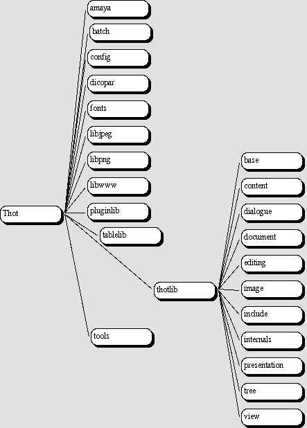

Below is the picture of the whole tree built from the source archives for Thot and Amaya.
We assume that the right archive needed has been fetched from W3C or INRIA
servers, namely and stored in /tmp :
amaya-src-yyy.tar.gz
(where yyy is the Amaya version number).
 The archive amaya-src-yyy.tar.gz, allows you
only to build the Amaya without Java support.
The archive amaya-src-yyy.tar.gz, allows you
only to build the Amaya without Java support.
Here is a short table of compatibles versions of Thot and Amaya:
| Thot | 2.0(a-b) | 2.1(a-b) | 2.1c | 2.1d |
2.1e | 2.2 |
| Amaya | 0.95(a-b) | 1.0(a-b) | 1.1 | 1.1a | 1.1b 1.1c | 1.2(a) |
The tree is created by invoking the following commands in the directory of
choice (it will create the Thot sub-directory) :
gunzip -c /tmp/amaya-src-yyy.tar.gz | tar xvf -
Be sure to have plenty of room available, compiling a debug version of Amaya can use up to 80 Mbytes of disk space. A non-debug one shouldn't use more than 40 Mbytes.

The tree is made of (from top to bottom):
amaya directory contains the amaya application
code.
thotlib directory contains the Thot library sources. The headers
defining the interfaces exported by the library are in the
include sub-directory.
batch directory contains the sources for the schema compilers.
font directory contains a few X-Windows specific fonts needed by
amaya.
dicopar directory hold the dictionnaries and hyphenation rules.
config contains all the dialogs messages files both for english
and french, as well as a few configuration files like the Thot registry (stored in file thot.ini).
libjpeg and libpng contains the sources of two
graphic libraries needed by Thot toolkit.
w3c-libwww-5.0a is a slightly patched version of the latest
version of the WWW Library.
Amaya now uses autoconf to to set-up the compilation environment and build the binaries on Unix platforms. See next step Compiling Amaya with autoconf for more information on how to compile and install Amaya on Unix platforms.
The Amaya compilation differs on PC/Windows platforms. See Compiling Amaya On Windows NT for more information on how to compile and install Amaya.